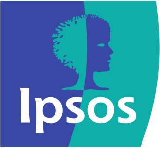
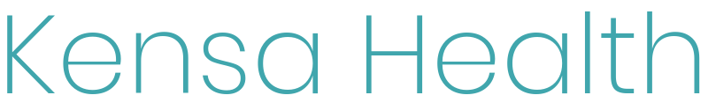

Plymouth Health Data Science Research
About
Health Data Science at the University of Plymouth is an interdisciplinary research programme, building upon our expertise in big data, mathematics, statistics, high performance computing and their applications in health and care. We work closely with NHS trusts, health and care organisations, industry and the third sector. Our vision is to develop and use data science approaches to improve health and care for patient and public benefit. For further information, please contact Dr Yinghui Wei.
Workshops
The Health Data Science Research Group, supported by EPSRC Impact Acceleration Account, is organising workshops under the broad theme of using data and analytical approaches to improve healthcare services for patient and public benefit. The aim of these workshops is to bridge the gap between academic research and real-world practice through providing opportunities for academic staff and non-academic partners to showcase their work and exchange knowledge.
These workshops provide great opportunities to share expertise and facilitate academia-industry research collaborations, as well as to co-design postgraduate projects aligned to priority areas in health and care in the real world. If you would like to attend the workshop, please contact Dr Yinghui Wei.
June 26\(^\text{th}\) 2023
Agenda
| Time | Content | Speaker | Chair |
|---|---|---|---|
| 10:00–10:30 | Tea and coffee, breakfast baps and fruit bowls | ||
| 10:35–10:45 | Welcome | Archie Clements, Deputy Vice Chancellor Research & Innovation | Nathan Broomhead |
| 10:45–10:50 | Project Overview | Yinghui Wei, Project PI | |
| 10:50–11:15 | How AI / Health Data Science can influence health policy? | Sheena Asthana, Director Centre for Health Technology | |
| 11:15–11:45 | Michael Bond and Julian Stander (UoP) | Samantha Prime | |
| 11:45–12:15 | BT | Dave Yearling and Sriharish Kalidass | |
| 12:15–12:45 | Royal Devon University Healthcare NHS Foundation Trust | Philip Luke / Elizabeth Wilkinson | |
| 12:45–13:30 | Lunch – Networking and Discussing Collaboration | ||
| 13:30–14:00 |  | Eileen Irvin | Stephanie Riley |
| 14:00–14:30 | Rose Sisk | ||
| 14:30-15:00 | Torbay and South Devon NHS Foundation Trust | Matthew Halkes | Laurence Bowes |
| 15:00–15:15 | Image data research | Craig McNeile | |
| 15:15-15:30 | PGT rapid-fire showcase | Shadi Babadi Michael Gulley Josh Gray |
Julian Stander |
| 15:30–15:45 | PhD rapid-fire showcase | Stephanie Riley Xu Wang Megan Courtman |
|
| 15:45–15:50 | Closing remarks | Yinghui Wei | |
| 15:50-17:00 | Tea/Coffee - Networking and Discussing Collaboration |
November 11\(^\text{th}\) 2022
Agenda
| Time | Talk | Speaker | Chair |
|---|---|---|---|
| 11:30–11:40 | Welcome | Alex Belton, Head of School | Nathan Broomhead |
| 11:40–11:50 | Project overview | Yinghui Wei, Project PI | |
| 11:50–12:15 | Plymouth Institute for Health and Care Research | Sheena Asthana, Director PIHR | |
| 12:15–12:30 | Rob Faro | Samantha Prime | |
| 12:30–12:45 | Roberta Fuller | ||
| 12:45-13:00 | Joe Turner and Brandon Chapman | ||
| 13:00–13:15 | Michael Bond | Stephanie Riley | |
| 13:15–13:30 | Eileen Irvin and Theano Anastasopoulou | ||
| 13:30–14:00 | Break | ||
| 14:00–14:15 | Cisco | Sumeet Bhatia | Samantha Prime |
| 14:15–14:30 | Mark Edge | ||
| 14:30–14:45 | Tango3 | Mike Trebilcock | |
| 14:45–15:00 | High Performance Computing Big Data |
Vincent Drach Matthew Craven |
Julian Stander |
| 15:00–15:20 | Academic Expertise | Julian Stander Lauren Ansell Mariam Pirashvili Gosia Wojtys Mona Nasser Craig McNeile Luciana Dalla Valle Nathan Broomhead |
Laurence Bowes |
| 15:20–15:30 | “What’s next?” | Yinghui Wei |
Project Partners
- EPIC
- 
- Tango 3
- Royal Cornwall Hospitals NHS Trust
- NHS Kernow Datalab
- Royal Devon University Healthcare NHS Foundation Trust
- Torbay and South Devon NHS Foundation Trust
- NHS Business Services Authority
- Health Education England
- Cisco